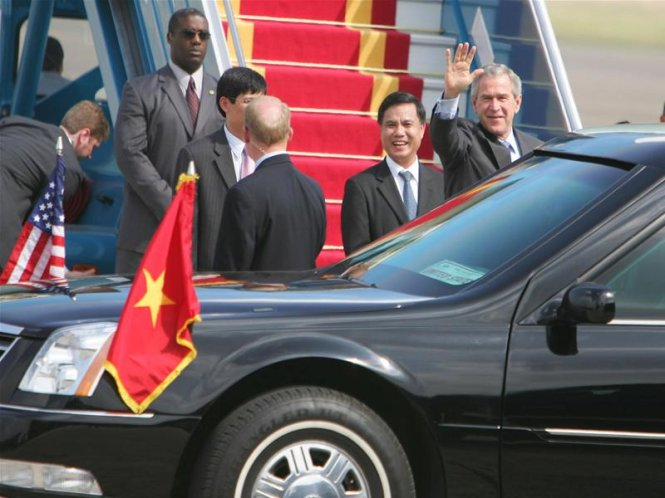

The photo gallery will show the historic moments in the VN - U.S. relationship marked by the visit of President Bill Clinton to Vietnam in 2000, opened a new chapter of cooperation between the two ex-enemies.
President Bill Clinton shakes hands with Vietnamese kids who are excited to meet him. Being the first U.S. president to visit Vietnam after the war, there were so many concerns about his safety while he visited the old enemy’s country. To a surprise, he was showered with love. Photo: Viet Dung
Another picture shows how much love Bill Clinton received when he was in Vietnam. There’s a noticeable absence of his security, which shows how safe he felt in Vietnam. The public doesn’t see him as the leader of Vietnam’s enemy, but as a friend. Photo: Viet Dung
Visiting Vietnam in 2006 to attend the 14th Asia-Pacific Economic Cooperation Leaders' Meeting in November, President George Bush tries to play a traditional Vietnam instrument “Dan Bau” (Monochord). Photo: Nguyen Khang

On his trip to Vietnam, President Bush said that the American experience in Vietnam contained lessons for the Iraq war. Photo: T.T.D
President Obama received warm treatment from the Vietnamese public. He went out to taste Vietnamese street life and street food with the famous chef Anthony Boudain and created a sensation in Vietnam on his trip. Once again, safety was not the concern, since he was loved and Vietnam was safe. Photo: Huu Nghi
President Obama and Vietnam National Assembly Chairwoman Nguyen Thi Kim Ngan fed the fish at Vietnamese National Hero “Uncle Ho”s House. Photo: Viet Dung
Came to Vietnam for the U.S. - DPRK summit and paid an official visit, President Donald Trump is the sole U.S. president who has visited Vietnam more than one time during his term. President Trump is the figure that creates polarization in Vietnamese public opinion in the same way that he has created in the U.S. public opinion. Photo: Ngoc Thang
President Trump and Chairman Kim at Metropole hotel in Hanoi, where they hoped to reach a deal in denuclearizing North Korea, but no big decision was made. Photo: Ngoc Thang
"A day of peace" was not made in Hanoi. Photo: Ngoc Thang